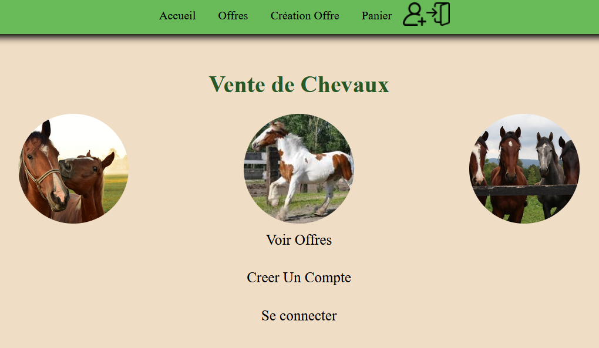

Mes projets
Développement d'une application de BlackJack
Java, JavaFX

Cette SAÉ consistait à produire une application d’un jeu de Casino d’après une demande client. En équipe de 5, l’objectif était d’améliorer nos compétences de développement d’application, tout en nous familiarisant avec la méthodologie agile Scrum.
En savoir plusCréation d'un site d'e-commerce
PHP, HTML/CSS
Dans le cadre d'un projet de 2ème année de BUT, il nous a été demandé de concevoir un site web dynamique de vente entre particuliers. En binôme, nous avons conçu cette application en MVC, de manière à gérer les connexions et les données de manière persistante grâce à une base de données.
En savoir plus